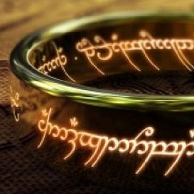

I'm a cool guy that is developing his programming skills in Le Wagon
See Le wagon website!Favorite Movies |
|
|---|---|
MatrixThomas A. Anderson is a man living two lives. By day he is an average computer programmer and by night a hacker known as Neo. Neo has always questioned his reality, but the truth is far beyond his imagination. Neo finds himself targeted by the police when he is contacted by Morpheus, a legendary computer hacker branded a terrorist by the government. |
|
Game of ThronesWe’ve known this one for a while now. Way back in April 2016, show-runners D.B. Weiss and David Benioff said: “I think we’re down to our final 13 episodes after this season. We’re heading into the final lap. That’s the guess, though nothing is yet set in stone, but that’s what we’re looking at.” So with seven of those episode down this year, we only have six more to go in Season 8. |
|
|  | Lord of the RingsThe film begins with a summary of the prehistory of the ring of power. Long ago, twenty rings existed: three for elves, seven for dwarves, nine for men, and one made by the Dark Lord Sauron, in Mordor, which would rule all the others. Sauron poured all his evil and his will to dominate into this ring. An alliance of elves and humans resisted Sauron’s ring and fought against Mordor. They won the battle and the ring fell to Isildur, the son of the king of Gondor, but just as he was about to destroy the ring in Mount Doom, he changed his mind and held on to it for himself. Later he was killed, and the ring fell to the bottom of the sea. The creature Gollum discovered it and brought it to his cave. Then he lost it to the hobbit Bilbo Baggins. |